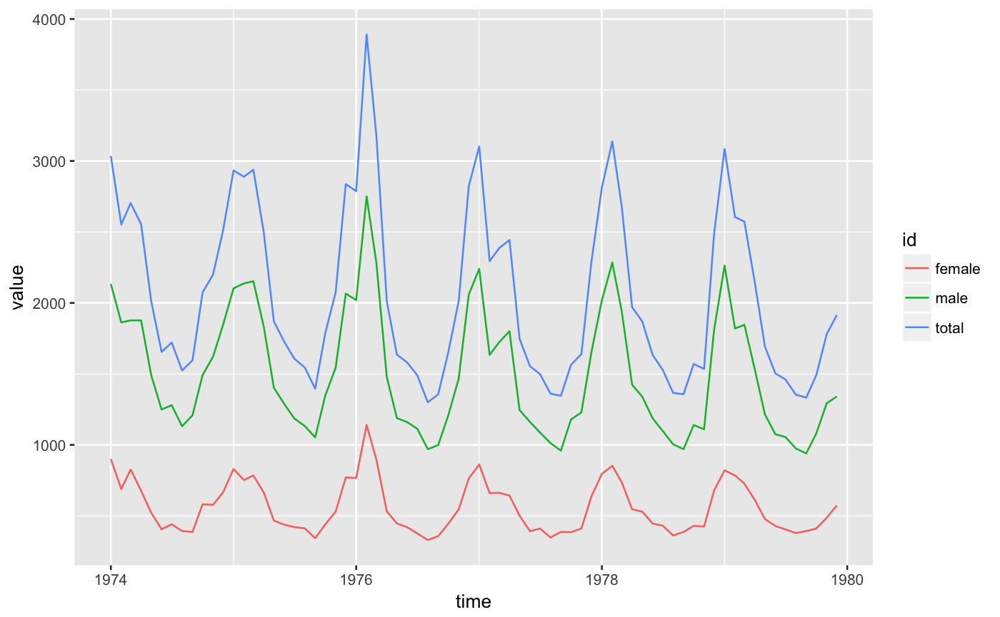
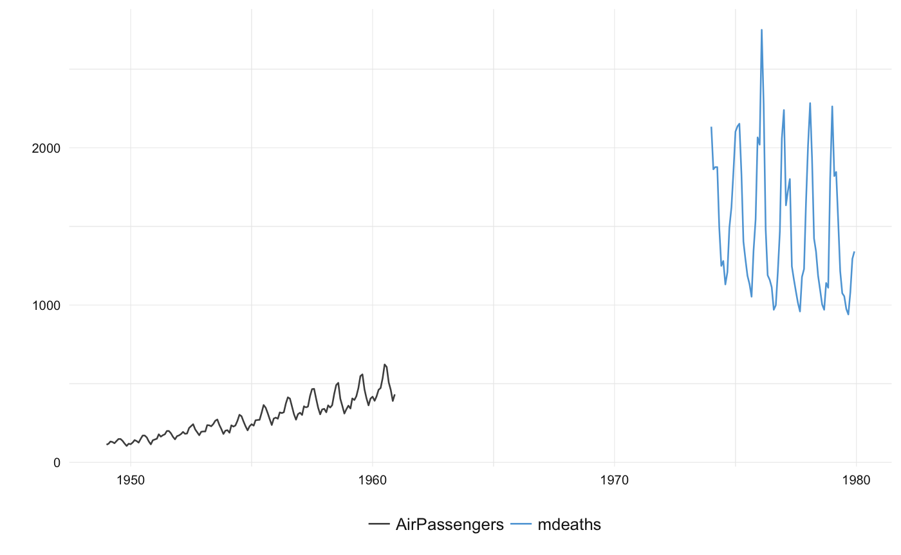

Using same style as ts_plot().
theme_tsbox(base_family = getOption("ts_font", ""), base_size = 12) colors_tsbox() scale_color_tsbox(...) scale_fill_tsbox(...)
| base_family | base font family (can also be set via |
|---|---|
| base_size | base font size |
| ... | aruments passed to subfunctions |
df <- ts_df(ts_c(total = ldeaths, female = fdeaths, male = mdeaths)) # standard ggplot library(ggplot2)#> #># a quick plot for time series p <- ts_ggplot(AirPassengers, mdeaths) # using same style as base graphic ts_plot() p + theme_tsbox() + scale_color_tsbox()